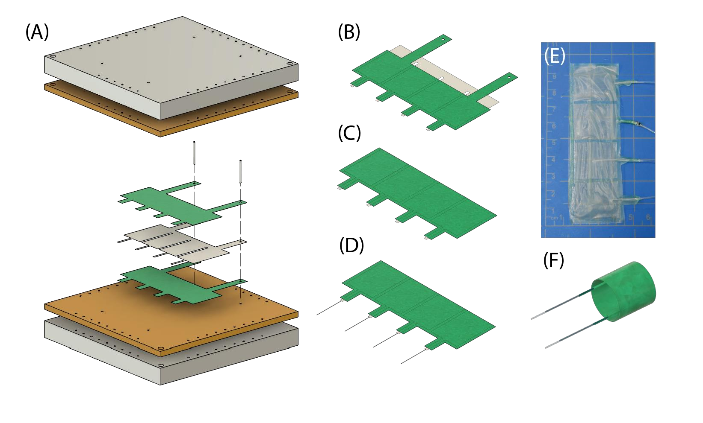
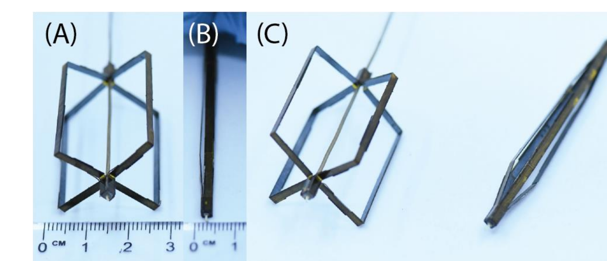
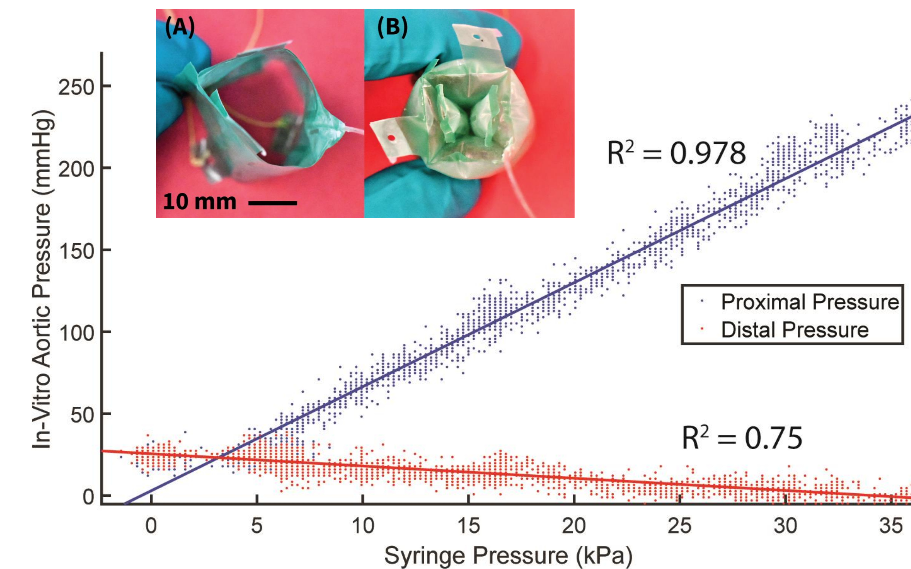
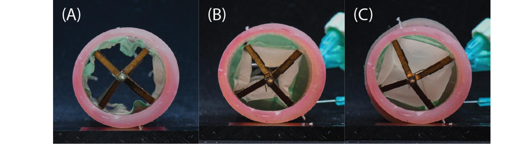

01 / System
System Overview
The proposed device combines a compact catheter-delivered assembly, inflatable occlusive balloons, and a deployable bracing structure. After deployment, balloon inflation changes the open passage through the simplified aorta model. The poster presents the device concept alongside benchtop pressure characterization and integrated deployment photographs; these are complementary demonstrations rather than a completed feedback-controlled vascular system.

02 / Motivation
Research Motivation
Noncompressible torso hemorrhage motivates methods for rapidly controlling aortic blood flow. The poster identifies vessel injury, tissue ischemia, and reperfusion injury as concerns associated with extended complete occlusion. A device that adjusts the remaining flow passage could provide a more controllable intervention, but reducing those clinical complications is a design objective rather than an outcome established by these experiments.
The engineering challenge is to reconcile a narrow insertion profile with expansion inside a much larger vessel. This study therefore investigates small laminated balloon structures and a collapsible supporting mechanism, with variable occlusion evaluated in a simplified in-vitro aorta model rather than a patient or animal study.
03 / Design
System Design
Laminated occlusive balloons
Precision-cut material layers are stacked and heat fused to form millimeter-scale balloon structures. Figure 2 shows the layered fabrication sequence and fabricated components. The poster uses this approach to create components of the proposed device, and identifies the “phased tetracuspid” balloon configuration in its pressure-characterization results.

Deployable bracing
Initial flow testing without stabilization made balloon deployment difficult. A separate rigid bracing mechanism, fabricated using principles of MEMS, was developed in response. Its deployed and compact configurations address positioning while preserving the small delivery profile; the poster does not report a new controlled comparison quantifying how much the brace improves stability.

04 / Method
Methodology
The poster’s fabrication and evaluation can be read as four stages. Pressure-response characterization and integrated-device deployment are reported separately, so the sequence below does not imply that the integrated prototype was tested under closed-loop control.
-
Fabricate
Precision cut, stack, and heat fuse laminated layers to produce occlusive balloon structures.
-
Deploy
Deliver the compact assembly and expand the supporting structure in the simplified vessel environment.
-
Inflate
Change balloon inflation to move between deflated, partially occlusive, and fully occlusive configurations.
-
Measure
Characterize balloon inflation against proximal and distal pressures in the in-vitro aortic-flow setup.
05 / Experiments
Experimental Setup
The pressure plot compares balloon inflation input, labeled syringe pressure in kPa, with proximal and distal in-vitro aortic pressures in mmHg. The poster explicitly states that this initial characterization did not include an accompanying stabilization mechanism. A separate integrated-device demonstration uses a silicone tube with a 27-mm inner diameter to display different inflation states.
The poster does not specify the pressure-test sample count, flow waveform, or a statistical definition for the plotted spread. Those details are therefore not inferred here. Its reported 5-mm access profile and 30-mm expanded diameter describe the device’s compact-to-expanded geometry, rather than a clinical access or treatment result.
06 / Results
Evaluation & Results
The evaluated question is whether the balloon design can produce a graded pressure response rather than only a binary blocked state. In the plotted benchtop characterization, proximal pressure rises and distal pressure falls as syringe pressure increases. The fitted relationships shown in the source have R² = 0.978 proximally and R² = 0.75 distally; these summarize the reported pressure correlation, not feedback accuracy or clinical performance.

The integrated-device photographs independently demonstrate deflated, partially inflated, and fully inflated balloons inside the silicone tube. Together with the pressure characterization, they support variable occlusion in the simplified model. They do not establish vessel compatibility, closed-loop regulation, durable stabilization under physiological flow, or successful hemorrhage treatment.

07 / Discussion
Discussion & Limitations
The evidence establishes a compact laminated device concept, pressure-dependent behavior of an occlusive balloon in an in-vitro setup, and distinct inflation states of the integrated prototype. The difficulty of positioning balloons in flow is an explicit limitation that motivated the bracing mechanism. The poster does not report comparative stabilization measurements or a completed feedback controller.
Further device testing, simulation, integration with closed-loop feedback, and ex-vivo and in-vivo evaluations are identified as future development. Accordingly, partial occlusion is an engineering capability under investigation; claims of reduced ischemia, prevented vessel injury, or improved patient outcomes would require evidence beyond this poster.
08 / Resources
Resources & Citation
Lorenzo Kinnicutt, Anant Pathak, Thomas Bohac, Aric Peng, Carlo Taglietti, Cheng-En Lee, Raisa Rauf, Jungjae Lee, Lim Zi Heng, Jacob Rogatinsky, Kevin McDonald, Sean Mori Carroll, Jeffrey Siracuse, and Tommaso Ranzani. “Minimally Invasive Soft Robotic Prototypes Provide Variable Occlusion in a Simplified Aortic Flow Model.” Research poster, American Heart Association Resuscitation Science Symposium, Chicago, 2022.
@misc{kinnicutt2022variableocclusion,
author = {Kinnicutt, Lorenzo and Pathak, Anant and Bohac, Thomas and Peng, Aric and Taglietti, Carlo and Lee, Cheng-En and Rauf, Raisa and Lee, Jungjae and {Lim Zi Heng} and Rogatinsky, Jacob and McDonald, Kevin and Carroll, Sean Mori and Siracuse, Jeffrey and Ranzani, Tommaso},
title = {Minimally Invasive Soft Robotic Prototypes Provide Variable Occlusion in a Simplified Aortic Flow Model},
year = {2022},
howpublished = {Research poster, American Heart Association Resuscitation Science Symposium, Chicago},
url = {https://jungjae01.github.io/assets/documents/mbl-vascular-poster.pdf}
}Read the original poster. Venue context is corroborated by the Morphable Biorobotics Laboratory publication list. Figures 2–6 are reproduced from the supplied poster; the fabrication figure is a complete native-image extraction with transparency composited onto white.